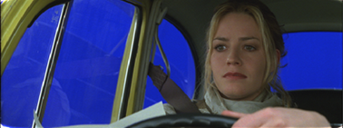
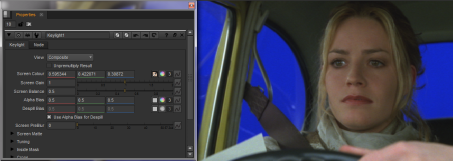

这部分解释了如何使用/绿屏抠像、主光, Nuke .
想想这张来自圣徒的照片，图片由 CFC 和派拉蒙英国电影有限公司提供
|
 |
| 蓝屏。 |
上图是蓝屏前景，应该在下面显示的背景上合成。
|
|
| 背景。 |
| 1。 | 开始 Nuke 并在这两个图像中阅读。从 Keyer 菜单，应用 键光 并附上观众。 |
| 2. | 单击旁边的色样 屏幕 颜色 激活滴管。在观众中, Ctrl/Cmd + Shift + Alt + 单击并在蓝色像素上拖动矩形区域，如下所示。 |

选择屏幕颜色也设置 屏幕 余额 .
就是这样。在许多情况下，这就是你执行键所需要做的一切，因为选择屏幕颜色会产生屏幕哑光并鄙视前景。
| 3. | 从开关输出 决赛 结果 到 复合材料 以查看背景上的前景。最终的复合材料如下所示。 |
选择屏幕颜色对于很多键来说可能已经足够了，但是里面还有更多的工具 Nuke 这可以用来处理更复杂的镜头。这些将在本章后面描述。
|
|